Data Visualization
There are many libraries can be used to visualize data, including pandas, matplotlib and seaborn.
matplotlib
|
<matplotlib.text.Text at 0x7ff19c81be90>
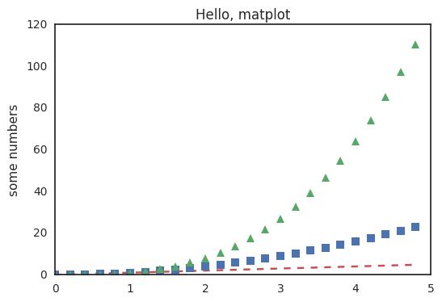
|
[<matplotlib.lines.Line2D at 0x7ff19c90fdd0>]
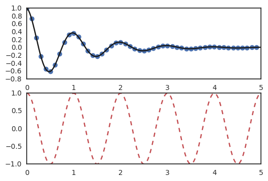
|
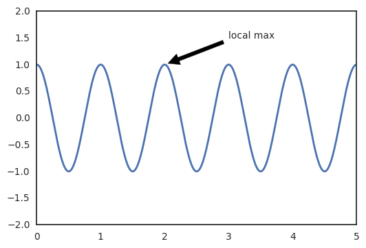
|
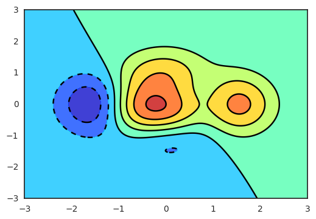
|
<matplotlib.image.AxesImage at 0x7ff19c9b3fd0>
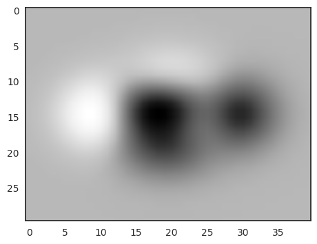
|
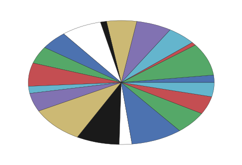
pandas
|
|
| sepal_length | sepal_width | petal_length | petal_width | species | |
|---|---|---|---|---|---|
| 0 | 5.1 | 3.5 | 1.4 | 0.2 | setosa |
| 1 | 4.9 | 3.0 | 1.4 | 0.2 | setosa |
| 2 | 4.7 | 3.2 | 1.3 | 0.2 | setosa |
| 3 | 4.6 | 3.1 | 1.5 | 0.2 | setosa |
| 4 | 5.0 | 3.6 | 1.4 | 0.2 | setosa |
|
setosa 50
versicolor 50
virginica 50
Name: species, dtype: int64
|
<matplotlib.axes._subplots.AxesSubplot at 0x7ff1a776ed90>
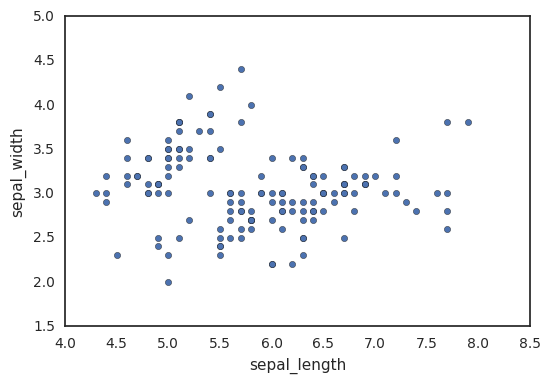
|
<seaborn.axisgrid.JointGrid at 0x7ff1a7710410>
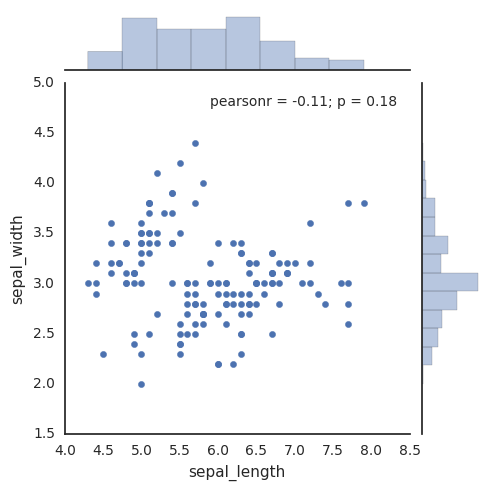
|
<seaborn.axisgrid.FacetGrid at 0x7ff1a71f7390>
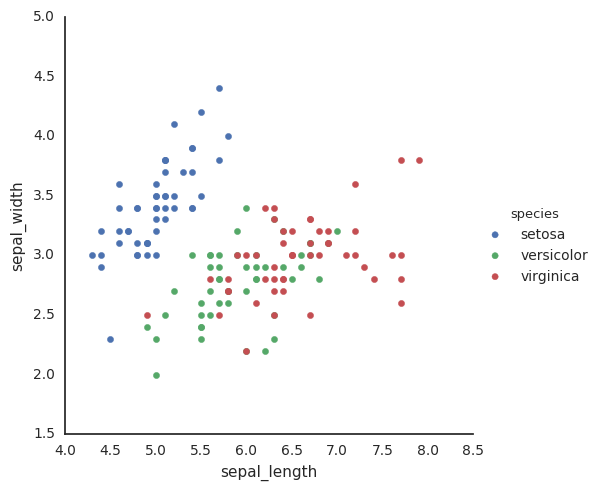
|
<matplotlib.axes._subplots.AxesSubplot at 0x7ff1a70d5990>
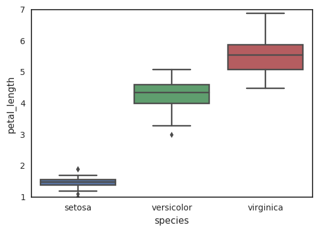
|
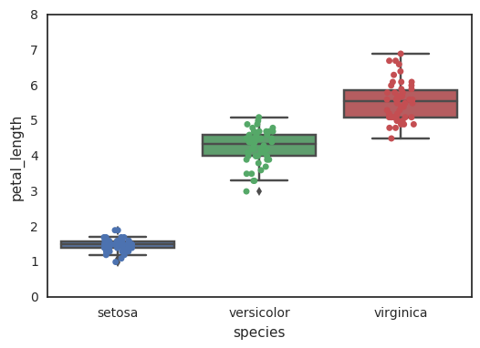
|
<matplotlib.axes._subplots.AxesSubplot at 0x7ff1a6de1e90>
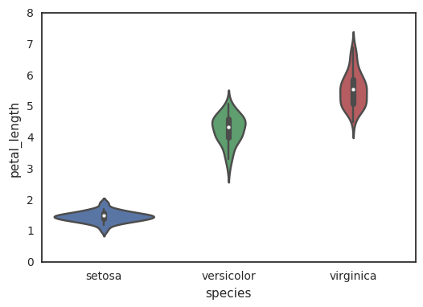
|
<seaborn.axisgrid.FacetGrid at 0x7ff1a6b14fd0>
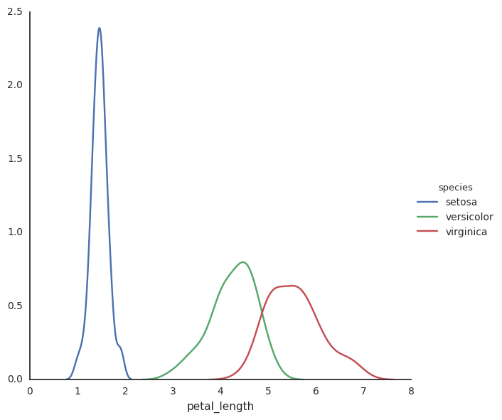
|
<seaborn.axisgrid.PairGrid at 0x7ff1a6b1df10>
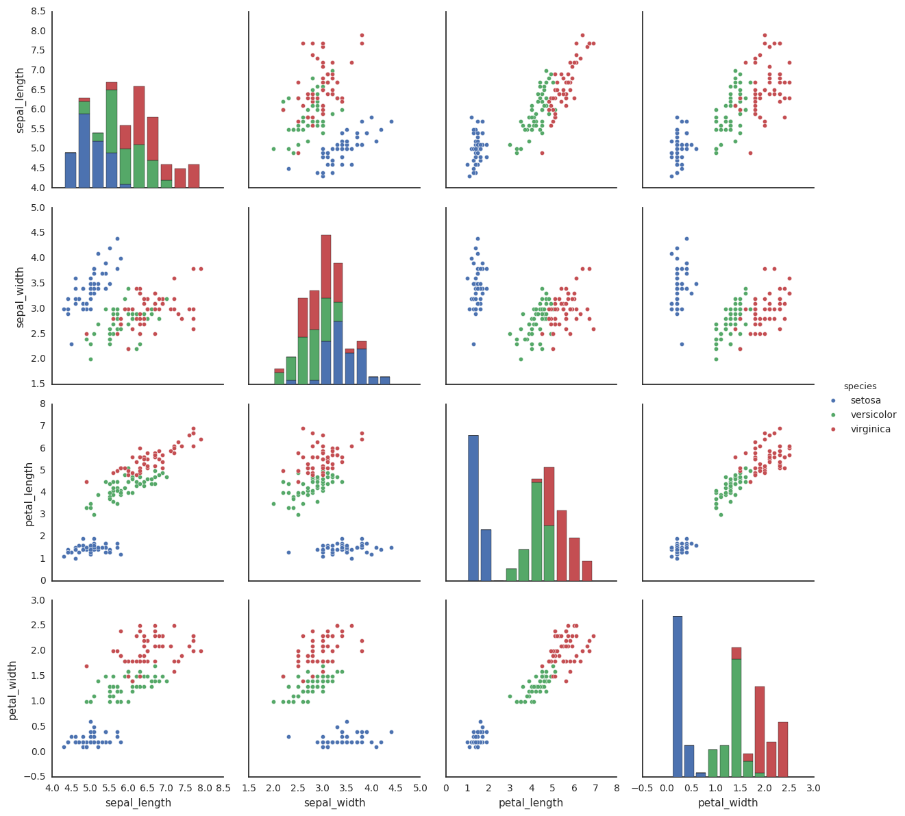
|
<seaborn.axisgrid.PairGrid at 0x7ff1a610c750>
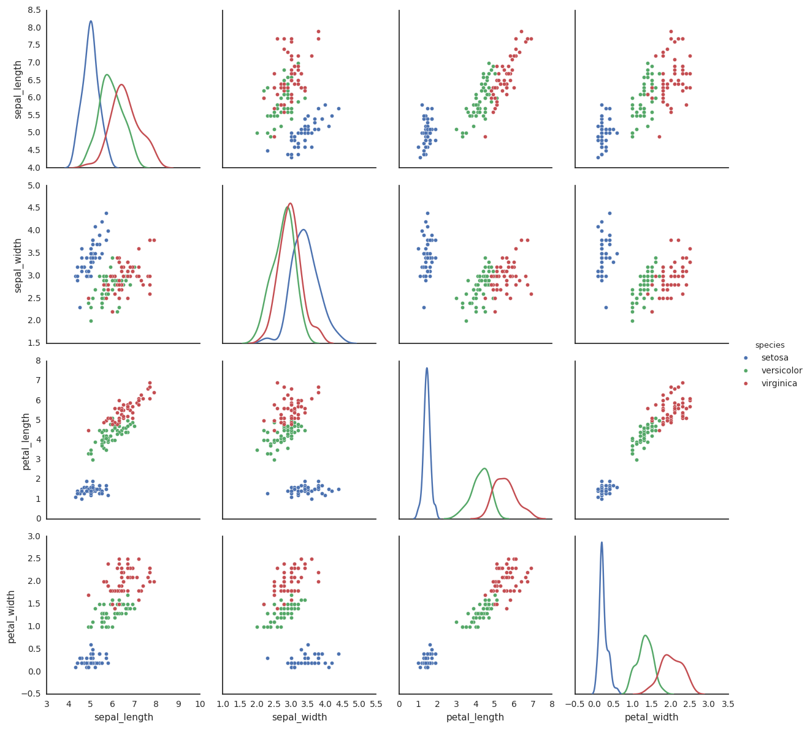
|
array([[<matplotlib.axes._subplots.AxesSubplot object at 0x7ff19e22b910>,
<matplotlib.axes._subplots.AxesSubplot object at 0x7ff19da942d0>],
[<matplotlib.axes._subplots.AxesSubplot object at 0x7ff19db5d290>,
<matplotlib.axes._subplots.AxesSubplot object at 0x7ff19da42210>]], dtype=object)
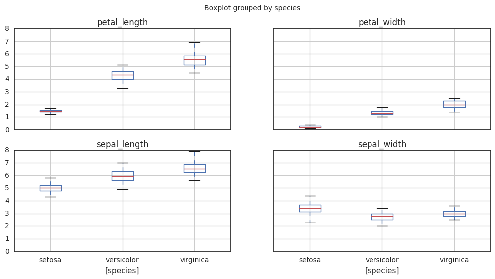
|
<matplotlib.axes._subplots.AxesSubplot at 0x7ff19d68af50>
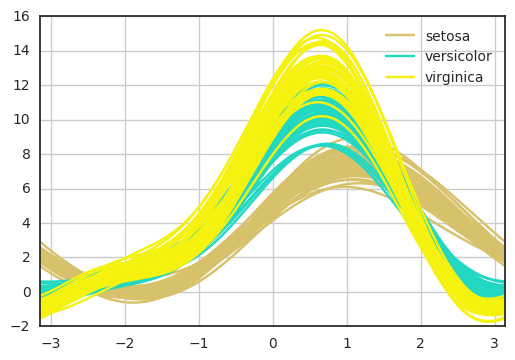
|
<matplotlib.axes._subplots.AxesSubplot at 0x7ff19d2a0790>
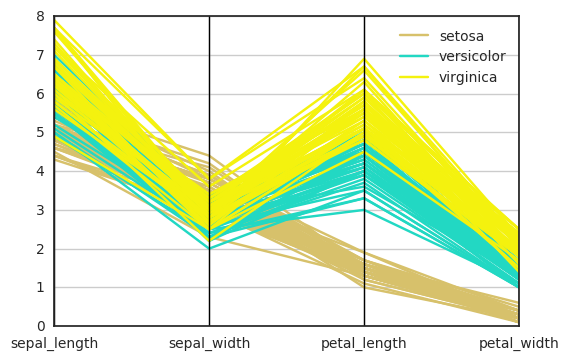
|
<matplotlib.axes._subplots.AxesSubplot at 0x7ff19cee8710>
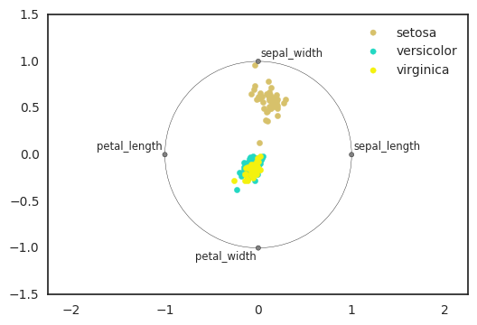